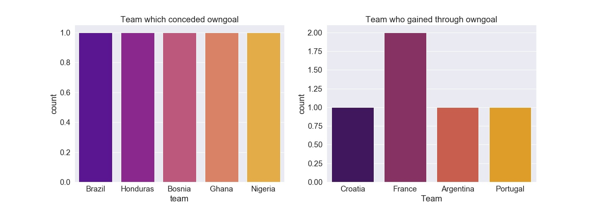
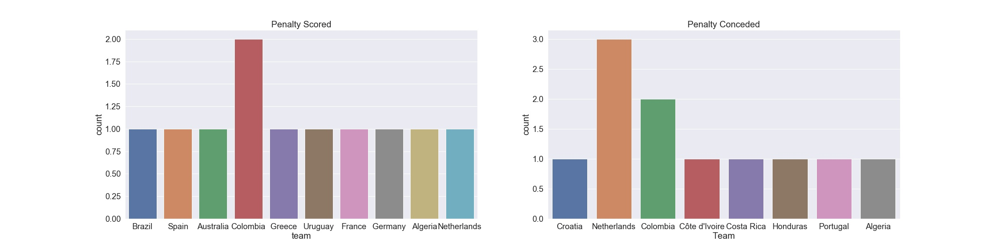
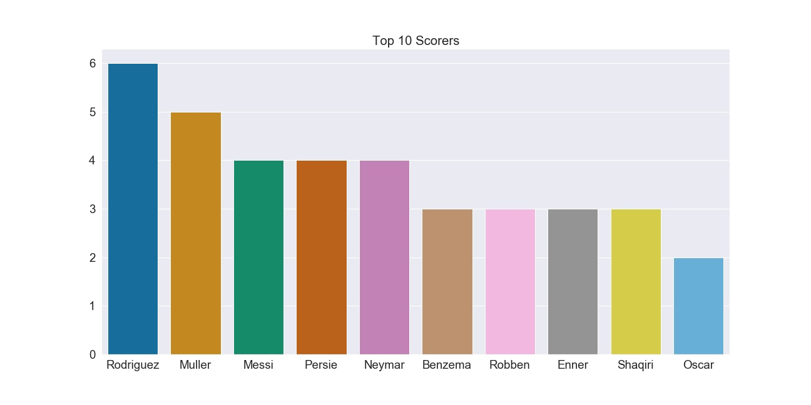
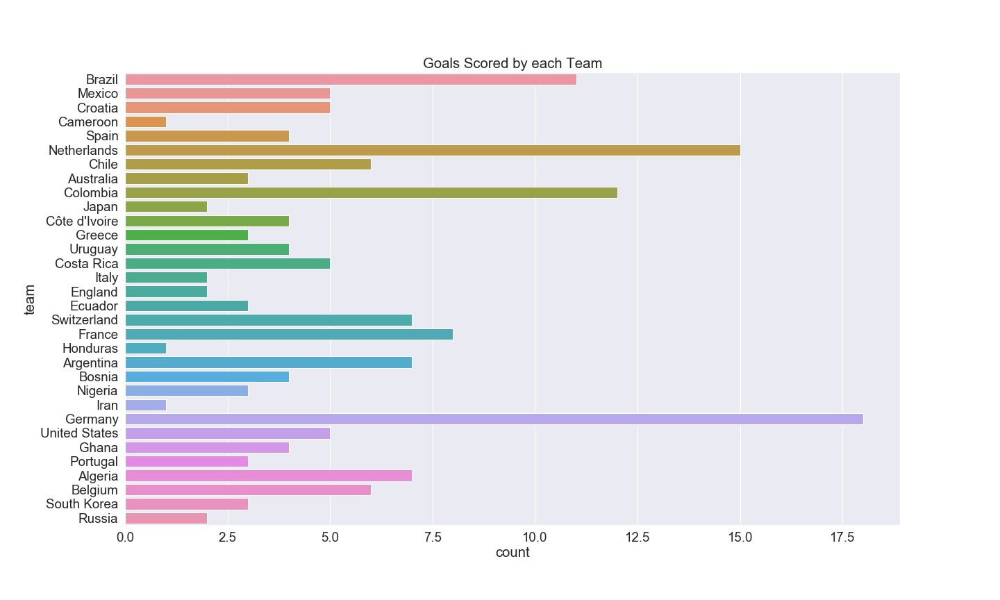
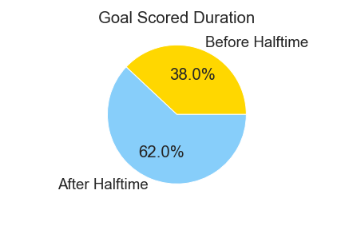
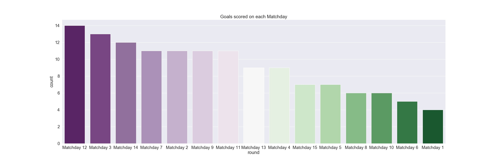
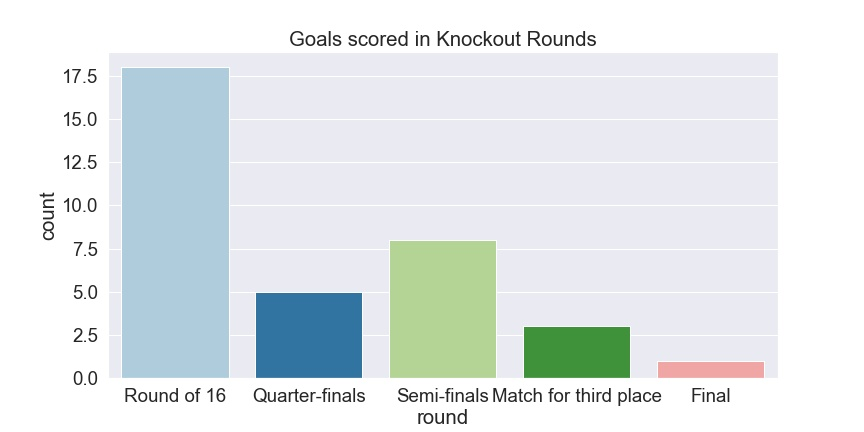
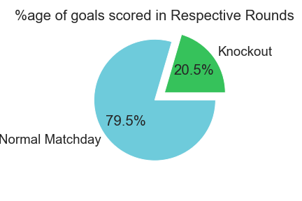

Fifa ETL & Analysis
In this project I've demonstrated how to Extract data from different API's, Transform it into meaningful data and finally Load it in an interpretable form.The data used here is from Fifa 2014 World Cup
Walkthrough:
- Extract data present in 5 different API's:
- Teams:"https://montanaflynn-fifa-world-cup.p.rapidapi.com/teams"
- Goals:"https://montanaflynn-fifa-world-cup.p.rapidapi.com/goals"
- Players:"https://montanaflynn-fifa-world-cup.p.rapidapi.com/persons"
- Games:"https://montanaflynn-fifa-world-cup.p.rapidapi.com/games"
- Rounds:"https://montanaflynn-fifa-world-cup.p.rapidapi.com/rounds"
Note: A key is required to access these API's which can be obtained from RapidAPI
- Transform the json data present into a csv format along with necessary features:
- Data present is not directly in the format of json, list or dictionary
- It is of type string(str)
- Write the functions that extract dictionary part from the strings and finally return a DataFrame.
-
Load the required data from all 5 sources in a single DataFrame and save it as data.csv
- Perform analysis on data.csv
- Link to the project:Github







